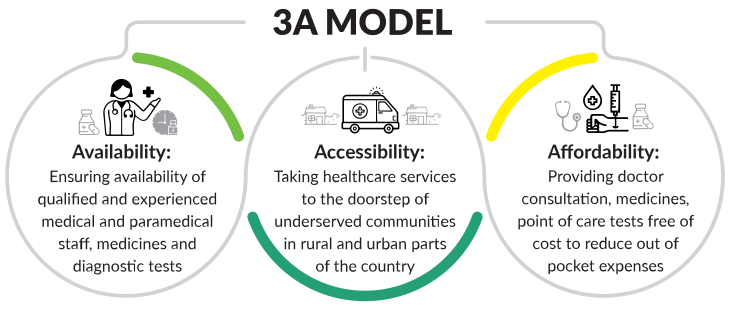
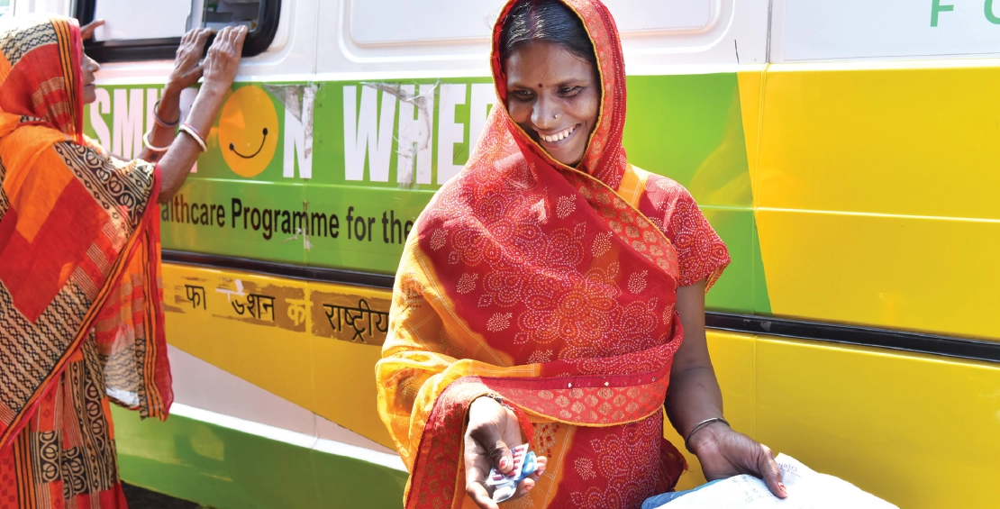

10,57,828+
People
16
States
Delivery of quality healthcare services at the last mile remains a challenge in India, because of the huge population size and uneven distribution of medical resources. Adding to this, the COVID-19 Pandemic has proven to be the defining public health emergency of our times. It posed serious challenges for the Public Health System. In this scenario, strengthening primary healthcare would be a major step towards achieving the goal of mitigating the burden of diseases at an advanced stage, reducing out-of-pocket medical expenses and improving healthcare outcomes.
Smile Foundation’s healthcare intervention is providing primary healthcare facilities at the doorsteps of the underserved communities in the identified rural areas and urban slums. The aim is to reach the vulnerable population who cannot afford basic healthcare facilities. The urban slum dwellers suffer from adverse health conditions owing to mainly two reasons–first the lack of education and thus lack of awareness; and second the unwillingness to lose a day’s wage in order to reach the nearest medical facility.
Smile Foundation’s comprehensive and communitycentric health programme takes primary healthcare services to the doorsteps of underserved communities in both rural and urban India. Following a two pronged approach, the programme provides curative as well as preventive services, addressing the gaps in availability, accessibility and affordability of healthcare.
 
Reaching the unreached through fully-equipped Mobile Healthcare Units staffed with doctors and paramedics, providing OPD services, pointof- care test facilities and medicines
Creating accessible static healthcare centres in remote rural communities providing OPD, medicines, point of care test facilities and counseling, with focus on Physiotherapy Services
Connecting people from remote rural areas with doctors for specialized healthcare from nearby urban health centres through e-Health Kiosks and Telemedicine Centres staffed with paramedics`
Providing need-based healthcare services to specific target groups through standalone health camps with specialized doctors, point of care tests, and sometimes surgical facilities
Delivering doorstep quality primary healthcare services
Improving Health seeking behavior
Complementing and supporting the Public Healthcare System
Sharing the load of govt health system
Reducing out-of-pocket healthcare expenses
Increasing awareness on Govt schemes
Promoting the goal of Universal Health Coverage
Improving access to Maternal & Child Healthcare
To make dental treatment affordable and accessible and to address the gaps existing in dental healthcare at the community level Smile Foundation joined hands with GlaxoSmithKline Asia Private Limited (now Haleon). The dental health units have been providing diagnostic as well as curative services through roster based OPDs. They organize regular Information, Education and Communication (IEC) activities to enhance health seeking behavior. Another very important component of the Smile on Wheels Dental HealthCare is the School Oral Health Programme that includes awareness sessions on Oral Health and Hygiene followed by regular dental check-ups.
The Mobile Dental Healthcare units are currently reaching 50 villages across Delhi NCR and benefitted over 34,000 beneficiaries during the reporting period.
Two new technology platforms have been integrated in the healthcare programme:
ReMeDi: An integrated telemedicine solution that enables teleconsultation where doctors are remotely connected to see the patient, talk to the patient, and can access past medical records. The device enables doctors to conduct over 30 point-of-care diagnostic tests in real-time. Results from these tests are transmitted automatically to the EMR. Doctors can prescribe medicines and also refer for follow-up visits and continuous care.
Health Cube: A state-of-art portable diagnostic system which provided results in 3 to 30 minutes for over 30 tests across various parameters. The system allows smart diagnostics and artificial intelligence to facilitate rapid screening of patients.
In order to fill the gap of shortage of specialist doctors in hard to reach areas with special focus on mother and child care and non-communicable diseases, Smile Foundation’s healthcare programme provided specialized consultation through telemedicine services in Bengaluru, Chennai and Hyderabad. The specialized teleconsultation service has made it possible for people to get specialized consultation without travelling for long distances through online, screen based, and real-time consultations with doctors, reducing out-of-pocket expenditure.
The Primary Healthcare Centres (PHC) were envisaged to provide integrated curative and preventive healthcare services to the underserved population. To address the need of upgrading the PHC/ Health facilities, Smile Foundation has upgraded 6 PHCs in Bengaluru (Karnataka), Chennai (Tamil Nadu) and Hyderabad (Telangana). The PHCs have been provided with equipments to upgrade their services including ECG machine, OT lights, dressing trolleys, weight machines for adults and children, radiant baby warmer, fumigation machine, biomedical waste trolleys, etc.
Indalawadi village, nestled in the remote Anekal block on the border of Tamil Nadu and Karnataka, has faced numerous challenges in accessing healthcare services. With limited public transportation options and located 12 kilometers away from Anekal City, the villagers encountered significant barriers to reaching essential medical care.
The village is home to around 1,230 residents, residing in approximately 230 households. The majority of the villagers are farmers and daily wage workers with limited financial resources. The high transportation costs required to travel to Anekal Government Hospital posed a substantial obstacle for the community in accessing crucial healthcare services. Consequently, many villagers were unable to seek timely medical attention, exacerbating their health issues.
However, the introduction of the Smile on Wheels (SoW) initiative has been a game-changer for the villagers of Indalawadi. This mobile healthcare service brings medical facilities directly to underserved communities, addressing the healthcare gap. Through this program, the villagers now have access to primary healthcare services right at their doorsteps, eliminating the need for long and expensive journeys.
Over the past year, SoW has made a tremendous impact on the health of the community in Indalawadi. The mobile clinic has provided a total of 1,881 consultations, catering to the diverse healthcare needs of the villagers. 76% of these consultations were for females and children, highlighting the importance of accessible healthcare for vulnerable populations.
During these consultations, approximately 18% of the patients were diagnosed with Hypertension and Diabetes Mellitus II, requiring regular check-ups and medication. SoW has played a crucial role in monitoring their blood pressure and sugar levels, ensuring that these patients receive the necessary care and support. Through timely treatment and regular monitoring, the initiative has significantly improved the health outcomes of community members living with these conditions.
Resident of a remote village in Gaya, Bihar, 75 year old Munni Debi lives alone. Her daughters are married and have migrated to other states. Every day, she faces the pain of arthritis and the quiet of her empty house. Recently, she discovered Smile Foundation’s Smile on Wheels mobile hospital that visits her village twice a month. Here, she isn’t just a patient. The staff listens to her stories, smiles with her, and helps her feel important. This isn’t just about medicine; it’s about feeling cared for and not alone. Munni Debi’s visits to the mobile hospital have become her lifeline. They bring her relief, not just from her physical pain, but from the loneliness that often surrounds her. In this small act of kindness, she finds a big reason to keep going.
A big family with four children means that both parents must work to make ends meet. Malti works as a cook at a school in a remote village of Chatra, Jharkhand. It helps that she loves both cooking and children. Sadly, Malti’s youngest son Piyush has a weak immunity and falls sick frequently. The nearby hospital is 20km away and either her or her husband had to take a leave to take Piyush to the hospital. When Smile on Wheels reached their village, Malti approached it apprehensively but was quickly impressed with the expertise of the medical personnel and equipment in the mobile healthcare unit. With regular visits, the health of Piyush improved by leaps and bounds. You will often find Malti talking to her friends talking about how healthy habits and nutritious food is crucial for children and that is where our success lies.
beneficiaries were women and children
people sensitised on health & hygiene through IEC activities
people benefitted through telemedicine projects
people received relief support under emergency & disaster response